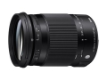
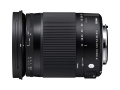
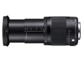

器材库 > APS画幅镜头 > 18-300/3.5-6.3 DC MACRO OS HSM

详细规格
发布日期
2014-09-12
焦距
18-300mm
等效35mm画幅焦距
27-450mm
最大光圈
F3.5 - F6.3
镜头结构
17片/13组
最近对焦距离
39cm
最大放大倍率
3x倍
驱动马达
HSM（超声波马达）
滤镜口径
72mm
镜头卡口
Canon EF, Nikon AF, Pentax AF, Sigma SA, Sony E
防抖
是
颜色
黑色
尺寸
79×101.5mm
重量
585g
附件
可进行1:2放大的特制近摄镜
该产品暂无存档的网友点评
产品图 / 样片


评测 / 相关文章
该产品暂无存档的评测文章